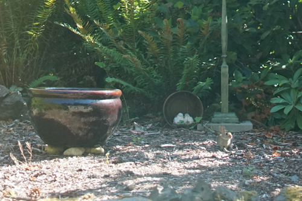
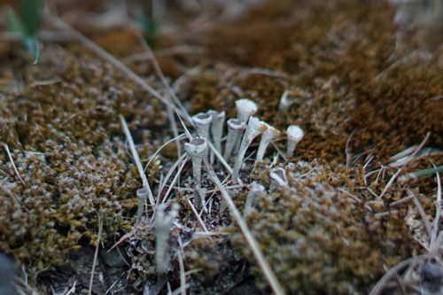
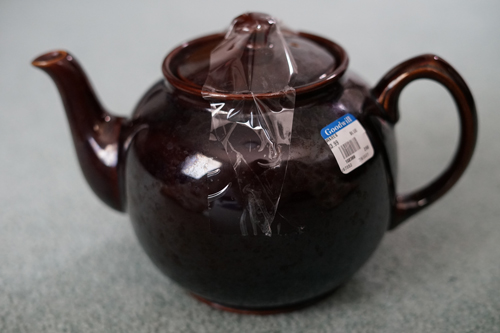
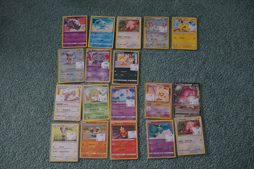

a picnic... for squirrels?! please!!!
please look at this baby bun. so small so cute. absolutely made my day to look out the window and see him!
i have no idea what these strange things are. i need to bring my close up filters out tomorrow for a closer pic
i keep trying to get some better astrophotos. this is what i came up with last time i went out. i found an astro thread on /p/ so i skimmed through that and took their advice on increasing iso. maybe i went too high!
you can maybe see some milky way smudgies in this one.
the trees here are so tall!
and finally, some recent buys
a sadler teapot for $4! its incredibly reflective! I made a pot of tazo passion since it was in the pantry today to test it out. i put 2 bags in and boy that was a mistake! its too strong! incredibly strong!!
i got some sugar free rootbeer a few days ago to sip in moderation and put it in the fridge and when i pulled it out today it was froze! i still havent gotten any of my root beer yet
pokemon caaaards!!! i was at a consignment shop with ryan and i picked out all the cute cards at someones booth to show him. and he bought me almost all of them! the 4 in the bottom right corner are his. I picked out 2 of them and that was his tax for buying me some i guess! this booth was expensive compared to the card shop i visited in idaho, so i didnt want to get much but it didnt end up that way!
this espurr is my favorite. its so sweet!! I would like to imagine that if i had a pokemon it would be dressed up similarly. the flavor text is ♡! i didnt know about generations radiant collection but i need like all the cards in that set now. this gulpin is such good buddies with his trainer ;a;
This set of three (1, 2, 3) with the charmander growing up with his trainer is also ;aaaaaaaa; so sweet!!!
im gonna look for more of them. they are too dokidoki!!! they seem to be easy to pick out because of the charms in the upper left corner